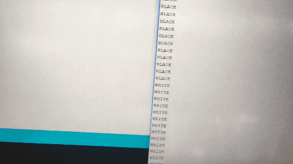
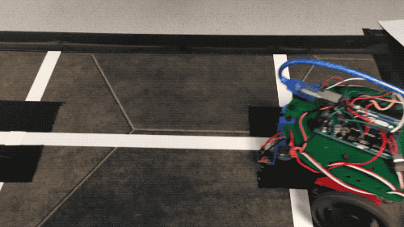
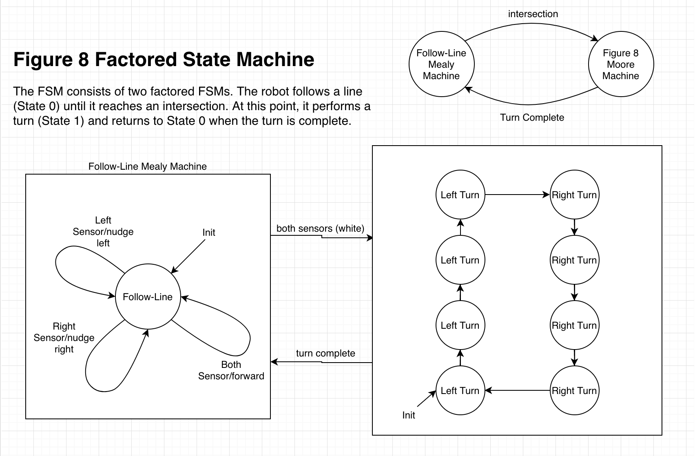
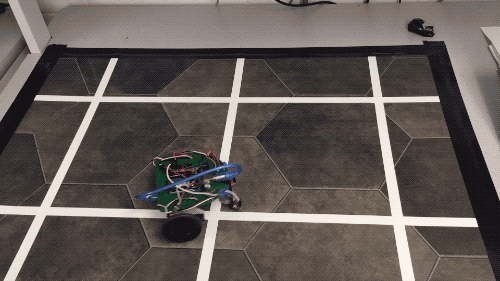

Testing the line sensors
Make robot go in figure eights
We began by connecting the line sensors as follows.
Diagram showing Arduino wiring.
Wiring implemented on our robot.
We then proceeded to use analogRead to see how the values output by the sensor varied as the robot moved over different color segments of the grid. We chose thresholds for white and black based on the output we were reading in from the sensor, which depends on the grid, the sensor quality, and the distance between the sensor and the ground.
To follow a line, we have a simple control loop that uses feedback from the sensors to keep the robot on the correct path. If the left sensor detects white, the right wheel speeds up to correct path and vice versa as seen in the code and video below.
void followLine(){
int rightLine = analogRead(rightSense);
int leftLine = analogRead(leftSense);
if(rightLine < sensorThreshold && leftLine < sensorThreshold){
//This if statement contains actions the robot should take if there is an intersection encountered
topState = 1; //go to the next state in the top state machine
}
else if(leftLine < sensorThreshold){
rightWheel.write(90); //nudge left
leftWheel.write(130);
}else if(rightLine < sensorThreshold){
rightWheel.write(40); //nudge right
leftWheel.write(90);
}else{
leftWheel.write(130);
rightWheel.write(40);
}
}

To traverse the grid in a figure eight, we developed the following finite state machine:
Turns are achieved by slowing one wheel down and speeding the other up. Through simple trial and error, the appropriate speed and delays can be found to suit your needs. The code can be seen below.
int topState = 0;
int figure8State = 0;
//top level state machine
void loop() {
if(topState == 0){
followLine();
}
else{
figureEight();
}
}
//Method to turn robot right until line is sensed
void turnRight(){
delay(100);
leftWheel.write(130);
rightWheel.write(90);
delay(800);
int rightLine = analogRead(rightSense);
while(rightLine > sensorThreshold){
rightLine = analogRead(rightSense);
leftWheel.write(130);
rightWheel.write(90);
}
}
//Method to turn robot left until line is sensed
void turnLeft(){
delay(100);
leftWheel.write(90);
rightWheel.write(40);
delay(800);
int leftLine = analogRead(leftSense);
while(leftLine > sensorThreshold){
leftLine = analogRead(leftSense);
leftWheel.write(90);
rightWheel.write(40);
}
}
//Figure eight state machine
void figureEight(){
if(figure8State < 4){
turnLeft();
figure8State++;
}else{
turnRight();
figure8State++;
}
if(figure8State > 7){
figure8State = 0;
}
topState = 0;
}
Here's our robot live.
